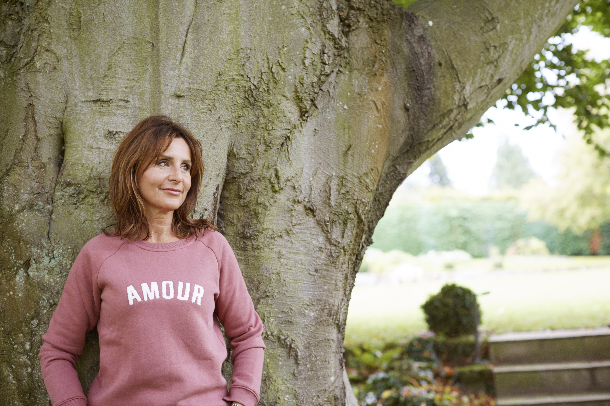

Forside Sund & smuk Sundhed Interview: Maria Borelius om sin vej til en anti-inflammatorisk livsstil

Maria Borelius var 52 år, da hun begyndte at føle sig træt og nedslidt, og tilmed deprimeret. Hun går til lægen og får at vide, at det er overgangsalderen, og at det bare er sådan, det er. Men den melding vil hun ikke godtage, og hun begynder derfor at undersøge hvordan hun kan få det bedre, og det tager hende på en fire år lang rejse til en ny anti-inflammatorisk livsstil.
Maria Borelius’ nye livsstil startede egentlig lidt tilfældigt. Fast besluttet på at få mere energi, kontakter hun derfor en fitness-stjerne i Canada, som laver en kostplan til Maria, og sætter hende i gang med at træne. Efter tre måneder kan Maria mærke en markant forskel. Hun føler sig ikke længere oppustet, og hun er i meget bedre humør. En dag, er hun til et møde, hvor en professor introducerer hende til anti-inflammatorisk kost. Det går op for Maria, at det er den selvsamme kost, som hun har levet efter i tre måneder.
Maria er videnskabsjournalist og nysgerrig af natur, så hun går i gang med at researche på alt, hvad der har med anti-inflammation at gøre. Som journalist er hun skeptisk og kritisk tænkende, og godtager ikke alt, hvad hun finder. Men gennem sin grundige research opdager hun flere ting, hun ikke var klar over. Noget af det, hun bliver mest overrasket over er, at det ikke kun er den anti-inflammatoriske kost, der påvirker kroppen, men også at negativitet kan være med til at øge inflammationen i kroppen.
– Jeg blev overrasket over, hvordan negativitet også kan påvirke inflammationen. Dét, at være deprimeret går ikke kun ud over dit sind, men også din krop. Men det giver god mening. Tænk for eksempel på skuespillere, når de skal spille en deprimerende rolle. At skulle leve sig ind i en destruktiv rolle, kræver enormt meget, og det kan tage uger for skuespillerne at blive sig selv igen.
Uden at være klar over det, bruger Maria sig selv som forsøgskanin i sin research. Hun har været på forskellige kurser, som bringer hende rundt omkring i verden. Hun tager blandt andet på et BLISS-kursus i USA. Også her er hun skeptisk, og vil egentlig hellere hjem, men hun giver det alligevel en chance. Nu lever hun efter BLISS-principperne hver dag.
– Ja, jeg praktiserer BLISS hver eneste dag. Jeg planlægger simpelthen min BLISS hver morgen. Jeg mærker efter i kroppen, og ser hvad min krop har brug for den dag. Måske er det styrketræning jeg skal den dag, eller også er det yoga.
Foruden kosten og bevægelse, mediterer Maria også, og hun føler, at hun er blevet mere spirituel og bedre til at følge sin intuition. Hun lægger især vægt på dét, hun kalder ærefrygt.
– Ærefrygt kan være mange ting. Men det er vigtigt, at det er DIN ærefrygt, og at du tager dig tid til at nyde den. Det kan være, du lytter til din yndlingsmusik. Eller også nyder du at gå en tur i skoven, i kirke, eller at se på et smukt maleri eller gøre noget godt for andre.
BLISS-principperne er enkle, og de kan virke lige til. Men Maria mener, at dét som kan være sværest for mange kvinder er at unde sig selv bevidst hvile, og dermed undgå stress.
– Vi, nordiske kvinder, ved godt hvad der er sund kost, og vi er også gode til at bevæge os. Især her i København, hvor de fleste cykler til alting. Men vi kan have svært ved at lægge telefonen fra os, og vi skal følge med i de sociale medier.
Hun ville ønske, at hun havde kendt til BLISS, da hun var ung og havde fundet mere balance i krop og sjæl, i stedet for at følge den ene ekstreme kur efter den anden. Hun beskriver i sin bog den anti-inflammatoriske rejse som en rejse til det bedste jeg. Det er hverken en skønhedskur, slankekur eller intelligenskur. Men den anti-inflammatoriske livsstil giver din hud glød, stabiliserer din vægt, og gør din hukommelse skarpere.
I starten var ikke alle lige begejstrede for Marias nye livsstil. Hendes familie begyndte at stille spørgsmål til hendes mange poser med chiafrø, krydderier og proteinpulver. Alligevel holdt hun fast, og det opfordrer hun også andre – især unge kvinder – til at gøre.
– Man skal ikke være fanatisk og fortælle andre, hvordan de skal leve. Du skal leve, som DU vil. Det er kun dig, der kan mærke, hvad du har brug for, og det er kun dig, der kan gøre noget ved det. Hvis du vil drikke et glas vin, så gør det. Gør det du vil, og vær tryg i dig selv. Det handler om at LEVE.
Skulle du have lyst til at prøve den anti-inflammatoriske livsstil, har Maria lavet en plan for tre dage, så du nemt kan komme i gang. I bogen er kan du finde lækre opskrifter på morgen-smoothies, og oversigt over hvilke grøntsager, frugter og bær, der kan nedsætte inflammationen i kroppen. Der er også et helt kapitel om BLISS-principperne, hvor hun kommer med gode tips til, hvordan du kan implementere BLISS ind i din egen hverdag.
Inden vi slutter interviewet, er der noget, vi simpelthen er nødt til at spørge Maria om. Nemlig, om der er noget, hun savner at spise eller gøre. Hun smiler skælmsk og griner.
– Jeg elsker piskefløde! Jeg elsker det bare! Flødeskum! Og ristet brød med et ordentligt lag smør. Det smager simpelthen bare for godt. Men det går jo ikke.